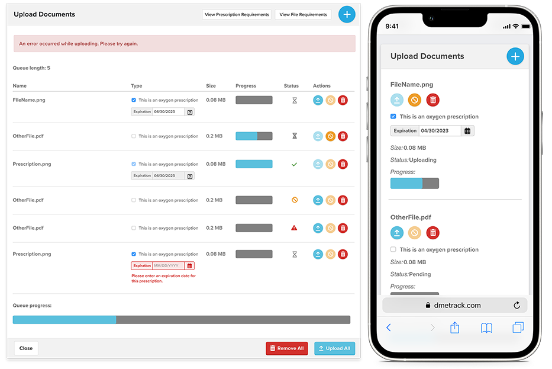

prescription upload & review process
in-house designer & developer at StateServ

Durable medical equipment (DME) providers are required to have a prescription on file when delivering oxygen to a patient, however there was no standard process for hospices to transmit this data to providers. Some companies would send them via fax or email, some would upload a file to the patient's profile and the provider user would have to sift through all the documents to find it, and some provided paper prescriptions that would have to be kept in a filing cabinet somewhere. When it came time for a licensing review, the results of this scattershot process were inconsistent at best, leading to fines and potential suspension of a license to distribute medical oxygen.
One challenge we always run into is getting users to actually utilize new features of the app — especially when the targeted user is a nurse who is already overworked.
I was unable to speak with actual external users to gain insight, so instead I referred to my existing personas for both clinician and administrative hospice users. I also spoke with internal DME provider users who would be responsible for reviewing prescriptions and producing records during a state audit. After consulting with users and our legal team, we were able to determine what information was required and what is not legally required but helpful to users.
Before starting work on wireframes, I created a user flow in LucidChart to diagram all possible scenarios. This included processes done by the user (uploading and reviewing files) and behind-the-scenes automatic processes instigated by the app (generating email reminders for noncompliant patients).
This feature was needed ASAP, so we decided to leverage existing functionality that could be expanded upon to meet the project goals. This approach would also help ease users into adopting a new feature by building off something they're already familiar with.
Because I was starting with existing functionality, I only created a few wireframes before generating mid- to high-fidelity mockups. I've built a library of mockup components that I use for all my designs, so I wasn't starting from scratch.
I did, however, use this chance to update the UX of our file upload process, which definitely needed some love. The buttons, icons, and colors were not in line with the rest of the app. In order to reduce the cognitive load, I made sure to update this module to follow our existing patterns. For example — our modal pattern is to have primary actions in a blue button on the right and cancel actions in a white button on the left. Destructive actions use a red button for emphasis and immediate recognition. I had to make updates to align the existing feature with these patterns.
Despite many of our users working in the field instead of at a desk, it was obvious that the mobile experience was not considered when the file upload feature was originally implemented, so I made sure to consider that UI from the start. I had to ensure that the tap targets were large enough for users to successfully select buttons on their phones and that the table-based layout gracefully resized without forcing awkward multidirectional scrolling. I ended up with more than 60 screens in the final prototype, which I presented to stakeholders from various parts of the business for review and approval.
Working with back-end developers, I helped implement the changes to the file upload process that would allow tracking prescriptions. One of the main considerations was information and validation to help guide the user when entering data. We provided them with upload requirements relating to file type and size before an upload was ever attempted, instead of forcing them to fail in order to view what criteria they missed. We also provided guidelines for what should be included in a prescription file.
Clinician users can upload prescriptions via the file upload module the same way they always have but now there's a new option to designate a file as a prescription, and if so to enter an expiration date which is required by regulators.
Because an expiration date is required, some prescriptions can be automatically marked as noncompliant by the system and prompt for a solution before a manual review is ever done. DME provider users tasked with reviewing prescriptions can now perform that review within the app, selecting from a list of prefilled reasons for rejection or supplying their own. When a prescription is rejected, the app sends an email to the hospice user prompting them to upload a new file. This reduces a lot of manual back-and-forth via email that we can't track within the system.
Users from both lines of business can also view prescription data within a report in the app. There they can search for patients by location, file status, and compliance. They can also view who placed the noncompliant order to identify consistent points of failure.
The end goal is to fully integrate this process into the web app, so no external files are needed. Again, we plan to leverage existing functionality by prompting users to fill out a new in-app form in the same UI where we currently prompt them to upload a file.
In addition to ensuring more consistent data across users and hospice branches, this will move us a step closer to being able to integrate with existing electronic medical records when available and remove the need for manual entry entirely.
I have created an additional 30 or so screens in the prototype to demonstrate this behavior.